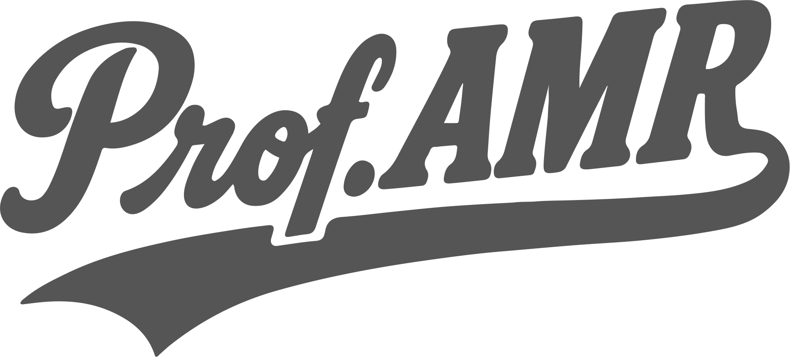

Transcritor de audiências · penal · offline
Transcrição de audiência
Offline · o áudio não sai da máquina · a transcrição é apoio, a conferência é humana.

Prof. AMRTranscritor de audiências · penal · offline
Offline · o áudio não sai da máquina · a transcrição é apoio, a conferência é humana.